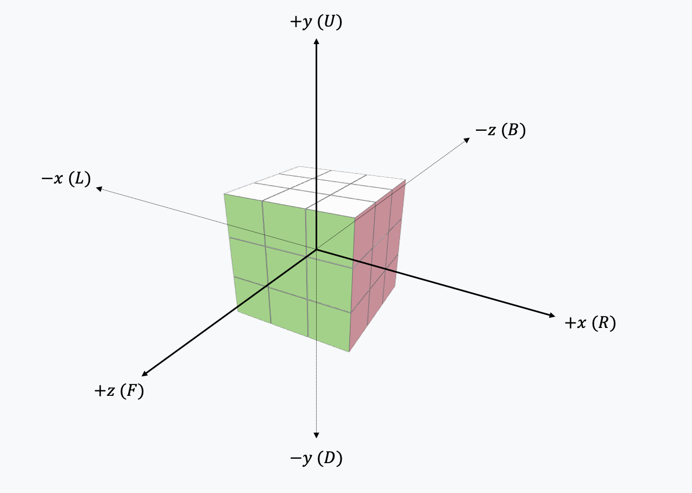
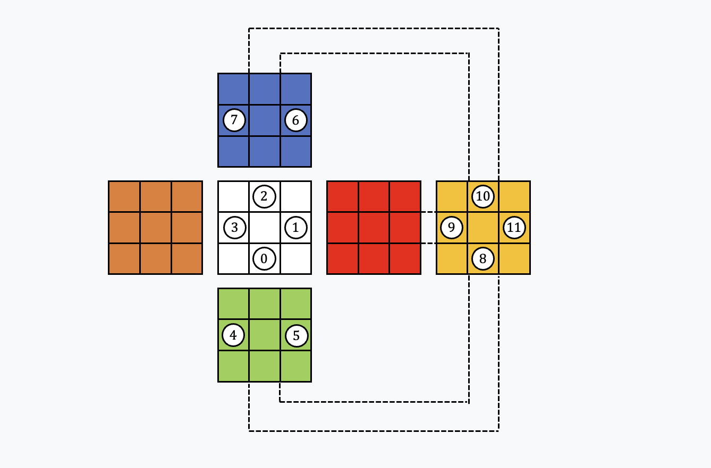
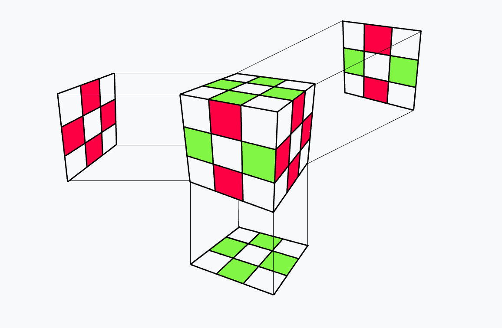
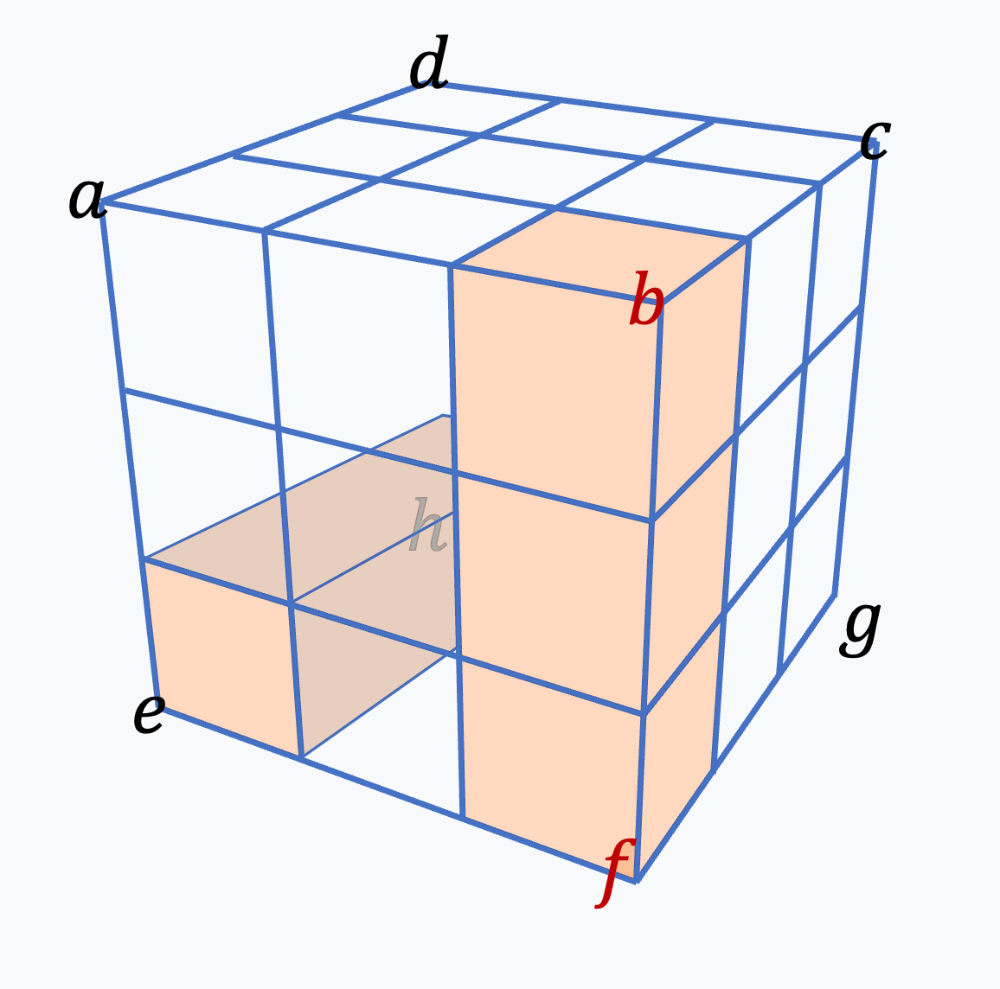

About
This playground lets you manipulate a Rubik's Cube intuitively using Singmaster notation:
Singmaster notation:
$U$: turn the up face 90° clockwise (Up)
$D$: turn the down face 90° clockwise (Down)
$L$: turn the left face 90° clockwise (Left)
$R$: turn the right face 90° clockwise (Right)
$F$: turn the front face 90° clockwise (Front)
$B$: turn the back face 90° clockwise (Back)
The face colors are fixed: up is white, down is yellow, left is orange, right is red, front is green, and back is blue. “Clockwise” is always from the perspective of looking straight at the face being turned.
Corner and edge pieces are named in the same way, with u, d, l, r, f, and b corresponding to their respective faces. For example, ufr is the corner where the up, front, and right faces meet—here, the white-red-green piece.
An apostrophe (') after a symbol means applying the inverse move, while a 2 means performing the move twice in a row—in other words, making a $180°$ turn.
The buttons under Quick Moves apply these basic moves. Under Algorithm, you can string them together into a sequence. When typing a sequence, be sure to put a regular space between each move.
About
このPlaygroundは, シングマスター記法に基づく直感的なルービックキューブ操作を提供します:
シングマスター記法:
$U: $上面を時計回りに90度回転 (Up)
$D: $下面を時計回りに90度回転 (Down)
$L: $左面を時計回りに90度回転 (Left)
$R: $右面を時計回りに90度回転 (Right)
$F: $前面を時計回りに90度回転 (Front)
$B: $背面を時計回りに90度回転 (Back)
ただし, 上面は白色, 下面は黄色, 左面はオレンジ色, 右面は赤色, 前面は緑色, 背面は青色で固定されています。また, 時計回りはそれぞれの面に向かい合った際の方向を指します。
頂点やエッジのキューブについてもu, d, l, r, f, bをそれぞれの面に対応させて同様の規則性で表現されます。例えばufrと書くと, 上面・前面・右面の3つの面が交わる頂点キューブを指すので, ここでは白赤緑色を持つキューブを指します。
また, 各記号の後に'(アポストロフィ)をつけることはその逆操作をすることを示し, 2をつけることはその操作を2回連続して行う, つまり$180$度回転を行うことを意味します。
Quick Movesのセクションのボタンはこれらの基本操作を適用するものです。また, Algorithmセクションではこれらの記法を用いて連続した操作を行うことができます。ただし, 書き込む際は各スペースの間に半角スペースを入れてください。
Try It Out
Let’s play around with the cube below!
For reference, here are a few well-known Rubik’s Cube move sequences and the corresponding Singmaster notation. Copy & paste them in and give them a try.
• Sexy move R U R' U'
• Right trigger (right turn) U R U' R'
• Rubik's maneuver L R' F' L R' D' L R' B2 L' R D' L' R F' L' R U2
Try repeating each of the first two six times and check that the cube returns to where it started! Sequences meant to make partial swaps like these fall into the category of commutators (A → B → A' → B'). I’m calling the third one the “Rubik’s maneuver” here. That name (probably) comes from the Tsukuda method, and it seems to be used for all sorts of different sequences. It flips a pair of opposite edges on the same face. I think it’s more common to write it using “$M$,” which turns the middle slice, but it can (obviously) be written without $M$ as well. It’s quite a special move (group-theoretically?).
Try It Out
下のキューブを操作してみてみましょう！
参考までに, よく知られたルービックキューブの操作と対応するシングマスター記法を示します。Copy & Paste して試してみてください。
・セクシームーブ R U R' U'
・右トリガー (右回転) U R U' R'
・ルービックス マヌーバー L R' F' L R' D' L R' B2 L' R D' L' R F' L' R U2
上二つはそれぞれ6回連続で適用すると元に戻ることを確認してみてください ! 後で触れますが, このような部分的な交換を行うことを目的とした操作は Commutator (A→B→A'→B')という括りになります。 また, 3つ目はここではルービックスマヌーバーという呼称で紹介しますがこれは(おそらく)ツクダ式の呼び方に由来していて, 一般的にこの呼び方で指し示される操作はどうやら色々ありそうです。。 同じ面上の向かい合うエッジを両方フリップさせる操作です。中央スライスを回す "$M$" を用いて表現することが一般的かと思いますが, 一応(当たり前だけど)使わずとも表記は可能です。 これは(群論的には?)かなり特殊な操作です。
Loading Rubik's Cube Playground...
Initializing...
Let's Play
Quick Moves
Algorithm
Advanced
Info
Group Theory
Preliminaries: permutations, transpositions, and cycles
The Rubik’s Cube can be regarded as a set of small cubies. Since no operation makes a cubie disappear or leaves duplicate cubies anywhere, an operation on the cube can be described as a bijection on the set of cubies (their positions and orientations)—though this is not very rigorous mathematically.
I’ve already jumped the gun and said that operations on the cube can be described as permutations, but let me give a precise definition of a permutation here.
A permutation is a map that rearranges the elements of a finite set.
A permutation of $\mathbb{Z}_n$ is a bijection from $\mathbb{Z}_n$ to itself, and is often called a permutation of degree $n$.
For example, the possible orderings of 1, 2, and 3 are in one-to-one correspondence with the permutations of degree 3.
If the set of all permutations of degree $n$ is denoted by $S_n$, and composition of maps by $\circ$, then $(S_n, \circ)$ forms a group. This is called the symmetric group of degree $n$, and a subgroup of a symmetric group is called a permutation group. I just said that every operation can be described as a bijection on the set of small cubies; that guarantees that all the operations can be described as a permutation group. Also, since the group is finite, any operation will return to its starting point if repeated sufficiently many times. The maximum order of an element of the $3\times3\times3$ cube group is known to be 1260 (R U2 D' B D'), so if you put any sequence you like into the Algorithm box and keep clicking it, it will return to the start within 1260 repetitions.
In other words, from the discussion so far, the operations on the cube can be described as a permutation group $G$ generated by $\{F, B, U, D, L, R\}$, and $G$ can be represented as a subgroup of the permutation group $S_{48}$ (the symmetric group of degree 48) acting on the 48 small facelets.
Incidentally, every group is known to be isomorphic to a permutation group (Cayley’s theorem).
A transposition is a permutation that swaps just two elements. Every permutation can be decomposed into a product of transpositions, and it is known that no matter how you decompose it, the parity of the number of transpositions does not change. This defines the parity of a permutation: \[ \operatorname{sgn}(\sigma) = \begin{cases} +1 & \text{if } \sigma \text{ is even}, \\ -1 & \text{if } \sigma \text{ is odd}. \end{cases} \]
So permutation parity is a well-defined classification of permutations based on transpositions, and it is closely related to the determinant.
For a permutation $\sigma \in S_n$, define the permutation matrix $P_{\sigma}$ by \[ (P_{\sigma})_{ij} = \begin{cases} 1 & \text{if } j = \sigma(i), \\ 0 & \text{otherwise}. \end{cases} \] Multiplying by it on the left rearranges rows, while multiplying on the right rearranges columns.
By the basic fact that swapping two rows or columns reverses the sign of the determinant, the determinant of this permutation matrix can be written, using the number $k$ of swaps from the identity matrix $I_n$, as \[ \det(P_{\sigma}) = (-1)^k. \] The way of swapping rows (or columns) is not unique, but the determinant itself is well-defined, so the value of $(-1)^k$ is uniquely determined regardless of the decomposition. Therefore \[ \det(P_\sigma) = \operatorname{sgn}(\sigma), \] which makes the parity of a permutation feel natural from a linear-algebra point of view, too.
Cyclic permutations
Next, let us consider what are called cyclic permutations (cycles). A cycle is a permutation that cyclically rearranges the elements of some subset and fixes everything else. Writing $\sigma=(a_1\ a_2\ \cdots\ a_k)$ means that $a_1$ goes to $a_2$, $a_2$ to $a_3$, $\ldots$, $a_{k-1}$ to $a_k$, and $a_k$ back to $a_1$. This is called a $k$-cycle.
In general, every permutation of degree $n$ can be expressed as a product of pairwise disjoint cycles (cycles that move no elements in common). Once we decide whether to write or omit fixed points as $1$-cycles, this decomposition is unique up to the order of the disjoint cycles and cyclic rotation of the entries within each cycle.
Using the usual convention that a product of permutations acts from right to left, any $k$-cycle with $k\geq 2$ can be decomposed into $k-1$ transpositions: \[ (a_1\ a_2\ \cdots\ a_k) =(a_1\ a_k)(a_1\ a_{k-1})\cdots(a_1\ a_2). \] Consequently, \[ \operatorname{sgn}(a_1\ a_2\ \cdots\ a_k)=(-1)^{k-1}. \] Thus a $k$-cycle is even when $k$ is odd, and odd when $k$ is even. More generally, if the disjoint cycles have lengths $k_1,\ldots,k_r$ (with fixed points omitted), then the sign is \[ \prod_{i=1}^{r}(-1)^{k_i-1} =(-1)^{\sum_{i=1}^{r}(k_i-1)}. \] In particular, the $4$-cycles used in the first constraint of the next section are odd permutations.
The orientations of edge and corner cubies can likewise be represented by cyclic values. An edge cubie has two visible faces, so its orientation lies in the two-element set $\{0,1\}$; the orientations of all 12 edges form an element of $\mathbb{Z}_2^{12}$. Likewise, a corner has three visible faces, so its orientation lies in $\{0,1,2\}$; the orientations of all 8 corners form an element of $\mathbb{Z}_3^8$. More concretely than the $S_{48}$ description, then, tracking corner/edge positions and orientations separately represents each state reached by an element of $G$ as an element of $S_8 \times S_{12} \times \mathbb{Z}_3^8 \times \mathbb{Z}_2^{12}$; the reachable states form a subset of this space.
The fundamental theorem of the cube derived from group theory
As a basic fact about the Rubik’s Cube, it is known that the necessary and sufficient conditions for a state to be reachable can be described group-theoretically. Write the corner positions as $\rho$, corner orientations as $v$, edge positions as $\sigma$, and edge orientations as $w$. Then a state $(\rho,\sigma,v,w) \in S_8 \times S_{12} \times \mathbb{Z}_3^8 \times \mathbb{Z}_2^{12}$ is reachable if and only if the following three conditions hold:
2. $\sum_{i=1}^{8} v_i \equiv 0 \pmod{3}$: the total corner orientation (twist) is 0.
3. $\sum_{j=1}^{12} w_j \equiv 0 \pmod{2}$: the total edge orientation (flip) is 0.
Let’s prove the three statements in order.
Setup
Write the state obtained by applying an element $g$ of $G$ to the initial state as \[ \Phi(g)=(\rho(g),\sigma(g),v(g),w(g)). \] The image $\operatorname{Im}(\Phi)$ of the map \[ \Phi:G\longrightarrow S_8\times S_{12}\times\mathbb{Z}_3^8\times\mathbb{Z}_2^{12} \] is what we call the set of “reachable states.”
Proposition 1: the parity constraint
To show this proposition, let’s look at how each basic move (a $90^\circ$ turn of any face) acts on the corner and edge permutations.
Fix any one $90^\circ$ face turn. There are four corners and four edges on that face, and the turn cycles each set as a single $4$-cycle. In general, a $4$-cycle \[ (a\,b\,c\,d) \] can be decomposed into transpositions as \[ (a\,b\,c\,d)=(a\,d)(a\,c)(a\,b), \] so its sign is \[ \operatorname{sgn}(a\,b\,c\,d)=(-1)^3=-1. \] Therefore, in the permutation corresponding to a $90^\circ$ face turn, both the corner part and the edge part are odd permutations.
It follows that under any basic move, \[ \operatorname{sgn}(\rho)\mapsto -\operatorname{sgn}(\rho),\qquad \operatorname{sgn}(\sigma)\mapsto -\operatorname{sgn}(\sigma) \] happen simultaneously. In particular, the equality \[ \operatorname{sgn}(\rho)=\operatorname{sgn}(\sigma) \] is invariant under every basic move.
On the other hand, for the element $e\in G$ corresponding to the initial (solved) state, \[ \Phi(e)=(\operatorname{id}_{S_8},\operatorname{id}_{S_{12}},0,0), \] and \[ \operatorname{sgn}(\rho(e))=\operatorname{sgn}(\sigma(e))=+1. \] Any $g\in G$ can be written as a product of finitely many basic moves $g_1,\dots,g_k$, so by the invariance above, $\operatorname{sgn}(\rho)=\operatorname{sgn}(\sigma)$ is preserved along every sequence of basic moves. Therefore every reachable state satisfies the claimed equality. $\square$
Proposition 2: the corner-twist constraint
For the proof, consider the corner-twist sum \[ T(v):=\sum_{i=1}^{8}v_i\in\mathbb{Z}_3. \] In the initial state $v_i=0$, so $T(v)=0$. All that remains is to show that $T(v)$ is invariant under every basic move.
Let me now give a precise definition of corner-cubie orientation (up to now I’ve only called it the amount of twist). First, take the spatial coordinate system shown in the following figure:

It seems to be standard to use the sticker with that corner’s U or D color: assign orientation 0 when it faces the U or D face, and distinguish the two remaining directions as 1 and 2 using one fixed clockwise/counterclockwise convention. For example, the orientation of the ufr corner is defined using its white face, so it is unchanged by the moves U and D, while we need to consider how it changes under the other four moves.
Fix any one $90^\circ$ face turn. Only the twists of the four corners on that face change; the twists of the other four corners stay the same.
More concretely, although it depends on the choice of coordinate convention, whenever those four corner twists change, the changes are a rearrangement of \[ (+1,+1,-1,-1)\in\mathbb{Z}_3^4. \] Thus the change in the twist sum is \[ \Delta T=(+1)+(+1)+(-1)+(-1)\equiv0\pmod{3}, \] so $T(v)$ is invariant under each basic move. (Of course, it is also invariant in the $(0,0,0,0)\in\mathbb{Z}_3^4$ case.)
Therefore, for every $g\in G$, \[ T(v(g))\equiv T(v(e))\equiv0\pmod{3}. \] That is, every reachable state satisfies \[ \sum_{i=1}^{8}v_i\equiv0\pmod{3}. \] $\square$
Proposition 3: the edge-flip constraint
I’ll omit this proof. Defining edge-cubie orientation involves more cases and is a little messier than for corners, and although the direction of the argument feels the same as Proposition 2, those cases make it rather long. I’ll only give the definition of edge-cubie orientation.
Each edge cubie has two face colors, so basically we only need to define which side is the “front” consistently across the cube, then assign a front and back at each position. Any assignment should probably be fine as long as it creates no contradictions; here we define it as follows. First classify the edges by whether or not they contain a U or D color.
- UD-type edges: edges containing a U or D color (for example, UF, UR, UB, UL, DF, DR, DB, and DL).
- Side-type edges: edges containing no U or D color, only F, B, R, and L colors (FR, FL, BR, and BL).
Now define the “front” of each edge cubie to be the numbered face in the figure below. These numbers correspond to the State display in the playground above and are the edge-cubie indices. If you have a physical cube at hand, it will probably be easier to understand if you put stickers on it following the figure and move it around.

Then “facing front” is defined as follows.
- For a UD-type edge, wherever that edge is in an arbitrary state, it is oriented (orientation 0) if its U- or D-colored sticker occupies one of the positions marked as front in the figure; otherwise it is flipped (orientation 1).
- For a side-type edge, choose its F/B-colored sticker as the reference face. In an arbitrary state, it is oriented (orientation 0) if that reference sticker occupies one of the positions marked as front in the figure; otherwise it is flipped (orientation 1).
In other words, when the marked sticker reaches one of the green positions below, it is front-facing (orientation 0), and when it reaches one of the red positions, it is back-facing (orientation 1).

On equivalence: the three conditions together and reachability
Just an outline. The three propositions above imply that “every reachable state satisfies conditions (1)–(3),” that is, \[ \operatorname{Im}(\Phi)\subseteq\Omega_0, \] where $\Omega_0$ is the set of all states satisfying the three conditions.
The total number of states satisfying the conditions and the order of the Rubik’s Cube group $G$ are both \[ \frac{8!\,12!}{2}\cdot3^7\cdot2^{11}. \] Since $\Phi$ is injective, \[ |\operatorname{Im}(\Phi)|=|G|=|\Omega_0|. \] Therefore the inclusion and equality of cardinalities give \[ \operatorname{Im}(\Phi)=\Omega_0, \] and satisfying all three conditions is equivalent to being reachable. Relative to the unconstrained $8!\,12!\,3^8\,2^{12}$ formal states, this is exactly a fraction of $1/12$.
Conjugation: a well-known lemma on permutations
It seems that people who are good at solving the Rubik’s Cube use the following lemma implicitly, over and over.
Here we stick to the usual convention: a product of permutations acts from right to left, so $\sigma\tau$ means "first $\tau$, then $\sigma$". A move sequence such as R' D2 R, read left to right, therefore corresponds to the permutation $R\,D2\,R^{-1}$.
Lemma. Let $r \in S_n$ be a permutation, and let $i$ and $j$ be distinct elements of $\{1,2,\ldots,n\}$. Suppose $s$ is a permutation that sends $i$ to $j$; that is, \[ s(i)=j. \] Then the permutation $s^r=rsr^{-1}$ sends $r(i)$ to $r(j)$; in other words, \[ s^r(r(i))=r(j). \]
In particular, let $i_1,i_2,\ldots,i_k$ be distinct elements of $\{1,2,\ldots,n\}$, and let $s$ be the cycle that sends $i_j$ to $i_{j+1}$. Then $s^r=rsr^{-1}$ is the cycle that sends $r(i_j)$ to $r(i_{j+1})$.
Elements $a,b\in G$ related by $b=gag^{-1}$ are called conjugate, and the Rubik’s Cube gives you a particularly good feel for conjugation.
A striking example is R' D2 R B' U2 B repeated twice: it twists ufr clockwise and dbl counterclockwise (you can try it in the playground above).
At first glance, this looks complicated, and it seems hard to keep track of everything at once. But try applying R' D2 R and B' U2 B separately, twice each (for example, R' D2 R R' D2 R), and you’ll notice that the cube returns to its starting state. Then watch how the edge pieces move while applying R' D2 R B' U2 B: you’ll see that R' D2 R and B' U2 B act independently of each other. In other words, once you realize that only the corners need to be tracked under R' D2 R B' U2 B, the result is fairly intuitive even before getting into the lemma and all that—but let’s give it a little more explanation here.
What the lemma says is this: if $s$ causes $i\rightarrow j$, then under $rsr^{-1}$, the action of $s$ is copied to wherever $r$ moves things. Taking R' D2 R as an example, the permutation produced by D2 takes place where R' has moved the pieces (see the figure below).

So, looking only at the corners, the permutation produced by D2 \[ D2=\begin{pmatrix}e&f&g&h\\g&h&e&f\end{pmatrix} \] takes place where R' has moved the pieces, so \[ (D2)^{R}=\begin{pmatrix}R(e)&R(f)&R(g)&R(h)\\R(g)&R(h)&R(e)&R(f)\end{pmatrix} =\begin{pmatrix}e&b&f&h\\f&h&e&b\end{pmatrix}. \] Try the moves on the cube, and you should be able to see this for yourself. With this way of thinking, the pieces’ positions and orientations become easy to track, and you’ll see that the whole sequence twists two corners.群論
準備事項: 置換・互換・巡回置換
ルービックキューブは小方体の集合として表せ, そしてあらゆる操作によってもルービックキューブの小方体が欠落したり, どこかに重複して存在したりすることはないことを考えると ルービックキューブの操作は小方体(の位置とその向きの)集合上の全単射として記述できることがわかる (数学的にあまり厳密ではないけれど)。
キューブに対する操作は置換として記述できるということは先出ししてしまっていたが, 置換についてここで改めて厳密な定義を与える。
置換とは, 有限集合の元を互いに入れ替えるような写像を指す:
$\mathbb{Z}_n$ の置換とは, $\mathbb{Z}_n$ からそれ自身への全単射であり, しばしば $n$ 次置換とも呼ばれる。
例えば, 1, 2, 3を順番に並べる順列は3次置換と一対一に対応する。
$n$ 次置換全体の集合を $S_n$ と表すとき, 写像の合成を $\circ$ とすると, $(S_n, \circ)$ は群を形成する。これを $n$ 次対称群と呼び, $n$ 次対称群の部分群を置換群と呼ぶ。 先ほど任意の操作は小方体集合上の全単射として記述できることを述べたが, それはあらゆる操作が置換群として記述できることを保証する。また有限群の元の個数は有限であるから, 任意の操作は必要十分に多く繰り返せば元に戻ることも保証される。 元の最大位数は $3\times3\times3$では1260であることが知られている(R U2 D' B D')ので, 好きな手を Algorithm 欄に入れて連打すれば1260回以内には元に戻るということである。
つまり, 以前までの議論よりキューブに対する操作は$\{F, B, U, D, L, R\}$を生成元として置換群$G$として記述でき, それは48個の小面の置換群$S_{48}$(48次対称群)の部分群として表現できるとわかる。
ちなみに, あらゆる群は置換群と同型になるということが知られている(ケイリーの定理)。
互換とは置換のうち2つの元のみを入れ替えるものを指す。任意の置換は互換の積として分解可能であることが知られているが, どのように分解しても互換の個数の偶奇性は変わらないことが知られている。 これにより, 置換の偶奇性が定義される。 \[ \text{sgn}(\sigma) = \begin{cases} +1 & \text{if } \sigma \text{ is even} \\ -1 & \text{if } \sigma \text{ is odd} \end{cases} \]
つまり置換の偶奇性は互換という操作に基づく, 置換の性質に対するwell-definedな分類であると言えるが, これは行列式と密接に関連している。
置換 $\sigma \in S_n$ に対して置換行列 $P_{\sigma}$ を \[ (P_{\sigma})_{ij} = \begin{cases} 1 & \text{if } j = \sigma(i) \\ 0 & \text{otherwise} \end{cases} \] と定義できる。左からかければ行の並び替えになり, 右からかけると列の並び替えになる。
この置換行列の行列式は, 行や列を入れ替えると行列式の符号は反転するという基本的な性質から, 恒等行列 $I_n$ からの入れ替え回数 $k$ を用いて \[ \det(P_{\sigma}) = (-1)^k \] と表せる。ここで, 行(あるいは列)の入れ替え方は一意ではないが、行列式自体は well-defined な量であるため、$(-1)^k$ の値は分解の違いに依らず一意に定まる。 したがって、 \[ \det(P_\sigma) = \operatorname{sgn}(\sigma) \] が成り立ち、置換の偶奇性が線形代数的にも自然に理解されると言える。
巡回置換
次に, 巡回置換(巡換)と呼ばれるものについて考える。巡回置換とは, ある部分集合の元を互いに循環的に入れ替え, それ以外の元は不動にするような置換のことである。 置換 $\sigma$ を $\sigma = (a_1\ a_2\ \cdots\ a_k)$ と表すとき, これは $a_1$ を $a_2$ に, $a_2$ を $a_3$ に, $\ldots$, $a_{k-1}$ を $a_k$ に, $a_k$ を $a_1$ に移す置換を意味する。 これは $k$ 巡換と呼ばれる。
一般に, 任意の$n$次置換は互いに素な(=動かす元を共有しない)巡回置換の積として表現できることが知られている。不動点を1-巡回置換として書くか省略するかを決めれば, この分解は巡回置換の順序と各巡回置換内の巡回的な書き換えを除いて一意である。
ここでは通常の関数合成と同じく, 置換の積を右側から先に作用させる約束を用いる。このとき, $k\geq 2$である任意の$k$巡換は$k-1$個の互換の積として \[ (a_1\ a_2\ \cdots\ a_k) =(a_1\ a_k)(a_1\ a_{k-1})\cdots(a_1\ a_2) \] と表現できる。したがって, \[ \operatorname{sgn}(a_1\ a_2\ \cdots\ a_k)=(-1)^{k-1} \] となり, $k$が奇数ならば$k$巡換は偶置換, $k$が偶数ならば奇置換である。より一般に, 互いに素な巡回置換の長さが$k_1,\ldots,k_r$であるとき(不動点は省略), その置換の符号は \[ \prod_{i=1}^{r}(-1)^{k_i-1} =(-1)^{\sum_{i=1}^{r}(k_i-1)} \] となる。特に, 次のセクションの1つ目の制約で用いる$4$巡換は奇置換である。
エッジ, コーナーキューブそれぞれの向きは巡回的な値として表現できる。エッジキューブは2面が見えているから向きの集合は$\{0, 1\}$という2元集合として表現でき, その数は12であるから全エッジキューブのorientationは $\mathbb{Z}_2^{12}$ の元として表現できる。 3面が見えているコーナーキューブについても同様の議論で$\{0, 1, 2\}$という3元集合として表現でき, 全コーナーキューブのorientationは $\mathbb{Z}_3^{8}$ の元として表現できる。 つまり, 先ほどの$G$は$S_{48}$の部分群であるという議論からさらに具体的に, エッジ / コーナーに分類しその位置と向きを別々に追跡すれば, $G$の各元によって得られる状態は$S_8 \times S_{12} \times \mathbb{Z}_3^8 \times \mathbb{Z}_2^{12}$の元として表現でき, 実現可能な状態全体はその部分集合になるということが言える。
群論から導かれるキューブの基本定理
ルービックキューブに関する基本的な事実として, ある状態が実現可能であるための必要十分条件が群論的に記述できることが知られている。 コーナーキューブの位置を$\rho$, 向きを$v$, エッジキューブの位置を$\sigma$, 向きを$w$と書く時, ある状態$(\rho,\sigma, v, w) \in S_8 \times S_{12} \times \mathbb{Z}_3^8 \times \mathbb{Z}_2^{12}$が実現可能であるための必要十分条件は以下の3つである:
2. $\sum_{i=1}^{8} v_i \equiv 0 \mod 3$ : コーナーキューブの向き(twist)の総和は0
3. $\sum_{j=1}^{12} w_j \equiv 0 \mod 2$ : エッジキューブの向き(flip)の総和は0
3つの命題を順に証明していく。
準備
$G$ の元 $g$ を初期状態に作用させて得られる状態を \[ \Phi(g)=(\rho(g),\sigma(g),v(g),w(g)) \] と書く。この写像 \[ \Phi:G\longrightarrow S_8\times S_{12}\times\mathbb{Z}_3^8\times\mathbb{Z}_2^{12} \] の像 $\mathrm{Im}(\Phi)$ を「実現可能な状態」の集合と呼ぶ．
命題1: Parity制約
この命題を示すために, 各基本手（いずれかの面の $90^\circ$ 回転）がコーナー置換とエッジ置換にどのように作用するかを調べる。
任意の面の $90^\circ$ 回転を 1 つ固定する。このとき, その面上には 4 個のコーナーと 4 個のエッジが存在し, 回転操作はそれらをそれぞれ 1 つの $4$-巡回置換として巡回させる。このとき, 一般に $4$-巡回置換 \[ (a\,b\,c\,d) \] は \[ (a\,b\,c\,d)=(a\,d)(a\,c)(a\,b) \] と互換の積に分解できるので, 符号は \[ \operatorname{sgn}(a\,b\,c\,d)=(-1)^3=-1 \] となる。したがって, 面の $90^\circ$ 回転に対応する置換のうち, コーナー部分もエッジ部分もともに奇置換である。
以上から, 任意の基本手において \[ \operatorname{sgn}(\rho)\mapsto -\operatorname{sgn}(\rho),\qquad \operatorname{sgn}(\sigma)\mapsto -\operatorname{sgn}(\sigma) \] が同時に成り立つ。特に, 各基本手を適用しても等式 \[ \operatorname{sgn}(\rho)=\operatorname{sgn}(\sigma) \] は不変である。
一方, 初期状態（完成状態）に対応する元 $e\in G$ については \[ \Phi(e)=(\mathrm{id}_{S_8},\mathrm{id}_{S_{12}},0,0) \] であり \[ \operatorname{sgn}(\rho(e))=\operatorname{sgn}(\sigma(e))=+1 \] が成り立つ。任意の $g\in G$ は有限個の基本手 $g_1,\dots,g_k$ の積として書けるから, 上記の不変性より, どのような基本手列を経ても \(\operatorname{sgn}(\rho)=\operatorname{sgn}(\sigma)\) が保たれる。したがって任意の実現可能状態は命題の等式を満たす。 $\square$
命題2: コーナーねじれ制約
証明のため, コーナーねじれ和 \[ T(v):=\sum_{i=1}^{8} v_i\in\mathbb{Z}_3 \] を考える。初期状態では $v_i=0$ であるから, $T(v)=0$ が成り立つ。 あとは, 任意の基本手に対して $T(v)$ が不変であることを示せばよい。
ここで改めて, (今までは捻れ具合とのみ表現したが) コーナーキューブのorientationに厳密な定義を与える。
まずは次の図の通りに空間座標系を取る:
そして, 各コーナーキューブの向きはそのコーナーの「U または D 色」を持つシールがU面またはD面を向いているときを0とし, 残りの二方向を一定の時計回り・反時計回りの規則に従って1 / 2と定めるのが一般的なようである。 例えば, ufrコーナーキューブについては白色の面によりorientationが定義されるので, 操作U, Dによっては不変であり, 他4つの操作による変化を考える必要があることになる。
任意の面の $90^\circ$ 回転を 1 つ固定する。この操作により変化するのは, その面上に位置する 4 つのコーナーのねじれのみであり, 残りの 4 つのコーナーのねじれは不変である。
具体的には, 座標系の取り方に依存するものの, 4 つのコーナーに対するねじれ変化は, 変化する場合にのみ着目すると \[ (+1,+1,-1,-1)\in\mathbb{Z}_3^4 \] の順序を入れ替えたもの, として表される。 このとき, ねじれ和の変化は \[ \Delta T = (+1)+(+1)+(-1)+(-1)\equiv 0\pmod{3} \] であるから, $T(v)$ は各基本手の適用によって不変である。 (もちろん, $(0,0,0,0)\in\mathbb{Z}_3^4$の場合も不変)
よって, 任意の $g\in G$ に対して \[ T(v(g))\equiv T(v(e))\equiv 0\pmod{3} \] が成り立つ。すなわち, 任意の実現可能状態に対して \[ \sum_{i=1}^{8} v_i \equiv 0 \pmod{3} \] が成立する。 $\square$
命題3: エッジ反転制約
これについては, エッジキューブの向きの定義がコーナーキューブよりも場合分けが絡みやや煩雑である点と, 議論の方向性は命題2と気持ちが同じもののその場合分けなどにより冗長になるため割愛。エッジキューブのorientationの向きの定義のみ与えることにする。
まず各エッジキューブは2つの面色をもつので, 基本的には「表がどちらか」を全体に対して定義した上で, 各面に対して表裏を与えてやれば良い。 基本的には矛盾が起こらないのならどのような与え方をしても問題ないであろうが, ここでは以下のように定める。まずはUD面を含むか否かで分類する。
- UD型エッジ: U または D の色を含むエッジ（例: UF, UR, UB, UL, DF, DR, DB, DL）
-
側面型エッジ:
U, D を含まず, F,B,R,L の色だけからなるエッジ（例: FR, FL, BR, BL）
そして, 各エッジキューブの「表面」を定義するが, これは以下の図の番号が付けられた面とする。この番号は上の Playground の State 表示に対応しており, エッジキューブのIndexである。 もし手元に物理キューブがあるならば, 以下の図に倣ってシールなどを貼って動かしてみるとわかりやすいであろう。
そして, 「表向き」という状態については以下のように定義される。
- UD型エッジについて: そのエッジが任意の状態である位置にあるとき, U または D の色のシールが図の「表」の位置にあれば oriented（向き0）, そうでなければ flipped（向き1）と定義する。
- 側面型エッジについて: 完成状態におけるそのエッジの2色のうち, F/B 側の色を「基準色」と決めておく。 任意の状態で, この基準色のシールが図の「表」の位置にあれば oriented（向き0）, そうでなければ flipped（向き1）と定義する。
つまり, 以下の緑の位置にシールが来たときは表(向き0), 赤の位置にシールが来たときは裏(向き1)である。
同値性について: 3 条件の同時成立と実現可能性
概要だけ。上の 3 つの命題により, 「任意の実現可能状態は 3 条件 (1)-(3) を満たす」すなわち \[ \mathrm{Im}(\Phi)\subseteq \Omega_0 \] が従う（ここで $\Omega_0$ は 3 条件を満たす状態全体の集合）。
条件を満たす状態の総数とルービックキューブ群 $G$ の位数は \[ \frac{8!\,12!}{2}\cdot 3^7\cdot 2^{11} \] で一致することが求められる。このとき, $\Phi$ は単射であるから \[ |\mathrm{Im}(\Phi)| = |G| = |\Omega_0| \] が成り立つ。よって, 包含関係と濃度の一致により \[ \mathrm{Im}(\Phi)=\Omega_0 \] が従い, 「3 条件をすべて満たすこと」が「実現可能であること」と同値である。 制約を課さない形式上の状態数 $8!\,12!\,3^8\,2^{12}$ と比べると, 実現可能な状態はちょうど $1/12$ である。
置換に関する有名補題
ルービックキューブをうまく解く人は, 以下の補題を暗黙のうちに何度も使っているよう。
ここでは通常の慣習に従い, 置換の積は右から左に作用する（$\sigma\tau$ は「$\tau$ の後に $\sigma$」）とする。したがって, 左から右に読む操作列 R' D2 R は置換 $R\,D2\,R^{-1}$ に対応する。
補題: $r \in S_n$ を置換とし, $i$ および $j$ を $\{1, 2, \ldots, n\}$ の互いに異なる元とする。$s$ を, $i$ を $j$ に写す置換, すなわち \[ s(i) = j \] とするとき, 置換 $s^r = rsr^{-1}$ は $r(i)$ を $r(j)$ に写す置換である。すなわち, \[ s^r(r(i)) = r(j) \] が成り立つ。
特に, $i_1, i_2, \ldots, i_k$ を $\{1, 2, \ldots, n\}$ の互いに異なる元とし, $s$ を $i_j$ を $i_{j+1}$ に写す巡回置換とするとき,置換 $s^r = rsr^{-1}$ は $r(i_j)$ を $r(i_{j+1})$ に写す巡回置換である。
$b = g a g^{-1}$ という関係の元$a, b \in G$ の関係性は「共役 (conjugation)」と呼ばれるが, ルービックキューブはこの共役をよく体感できる構造になっている。
顕著な例が, R' D2 R B' U2 Bを2回繰り返す操作で, これはurfを時計回りに, dblを反時計回りにひねる(上のplaygroundで体験可能)。
ぱっと見複雑な操作であって, 全部同時に追跡するのは難しいように思える。しかし, まずは R' D2 R, B' U2 B それぞれ別々に2回適用してみると (例えば, R' D2 R R' D2 Rということ), キューブは初期状態に戻ることに気づく。そして, R' D2 R B' U2 Bを適用する過程でエッジキューブの移動を考えるとR' D2 RとB' U2 Bは互いに独立に作用していることがわかる。 つまり, R' D2 R B' U2 Bによる変化はコーナーキューブのみ追跡すれば良いと思えば, 上のような命題云々以前に直感的に理解可能とも言えるが, ここではもう少しそこに説明を与える。
先ほどの命題の主張は, $s$ が $ i \rightarrow j$ を起こす時, $rsr^{-1}$ により $s$ の操作は $r$ の移動先でコピーされて起こるということである。
これは, R' D2 Rを例にすると, D2 による置換が R' によって移動した先で起こっているということである。(次の図)
だから, 例えばコーナーキューブに注目すれば,
D2による置換:
\[
D2 = \begin{pmatrix}
e & f & g & h \\
g & h & e & f
\end{pmatrix}
\]
は, R' によって移動した先で起こるので,
\[
(D2)^{R} = \begin{pmatrix}
R(e) & R(f) & R(g) & R(h) \\
R(g) & R(h) & R(e) & R(f)
\end{pmatrix}
= \begin{pmatrix}
e & b & f & h \\
f & h & e & b
\end{pmatrix}
\]
となるということである。実際にキューブに操作を施してみればこれが確認できるはずである。この考え方に基けば容易に位置と向きが追跡可能であり, この操作全体が2コーナーをtwistすることがわかるだろう。
References
David Joyner, Adventures in Group Theory: Rubik's Cube, Merlin's Machine, and Other Mathematical Toys (Japanese translation: 『群論の味わい 置換群で解き明かすルービックキューブと15パズル』, 川辺治之訳, 共立出版).
Also try: ut-tomo.github.io/alg-trainer
参考文献
David Joyner, Adventures in Group Theory: Rubik's Cube, Merlin's Machine, and Other Mathematical Toys (邦訳: 『群論の味わい 置換群で解き明かすルービックキューブと15パズル』, 川辺治之訳, 共立出版).
こちらもどうぞ: ut-tomo.github.io/alg-trainer